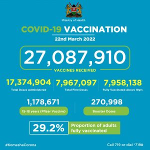

All covid 19 protocals and restrictions should be observed.
covid infections and vaccination numbers are also provided.
COVID-19 affects different people in different ways. Most infected people will develop mild to moderate illness and recover without hospitalization.
Most common symptoms:
fever,
cough,
tiredness,
loss of taste or smell,
Less common symptoms:
sore throat,
headache,
aches and pains,
diarrhoea,
a rash on skin, or discolouration of fingers or toes
red or irritated eyes.
To prevent the spread of COVID-19:
Maintain a safe distance from others (at least 1 metre), even if they don’t appear to be sick.
Wear a mask in public, especially indoors or when physical distancing is not possible.
Choose open, well-ventilated spaces over closed ones. Open a window if indoors.
Clean your hands often. Use soap and water, or an alcohol-based hand rub.
Get vaccinated when it’s your turn. Follow local guidance about vaccination.
Cover your nose and mouth with your bent elbow or a tissue when you cough or sneeze.
Stay home if you feel unwell.
If you have a fever, cough and difficulty breathing, seek medical attention.
Call in advance so your healthcare provider can direct you to the right health facility.
This protects you, and prevents the spread of viruses and other infections.
Masks
Properly fitted masks can help prevent the spread of the virus from the person wearing the mask to others.
Masks alone do not protect against COVID-19, and should be combined with physical distancing and hand hygiene.
Follow the advice provided by your local health authority.
If symptoms peersisit seek medical care.